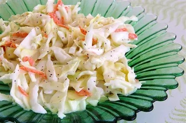

Coleslaw Dressing Recipe

Description
This creamy, mayo-based dressing uses ingredients you likely have on hand: sugar, lemon juice, vinegar, salt, pepper, and of course, mayonnaise. The resulting dressing is just the right balance of sweet, tangy, creamy, and peppery!
Ingredients
- ½ cup mayonnaise
- 2 tablespoons white sugar
- 1 ½ tablespoons lemon juice
- 1 tablespoon vinegar
- ½ teaspoon ground black pepper
- ¼ teaspoon salt
Steps
- Gather all ingredients.
- Whisk mayonnaise, sugar, lemon juice, vinegar, pepper, and salt together in a bowl until smooth and creamy.
- Store in an airtight container.
Recipe Link